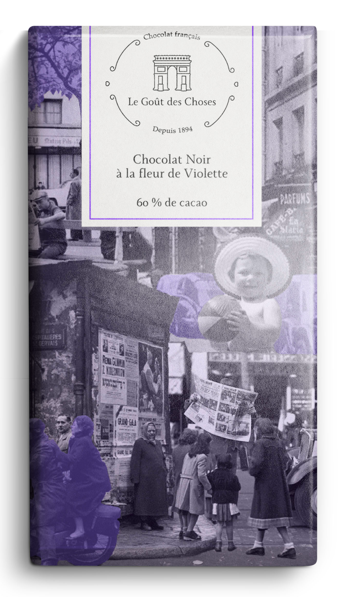
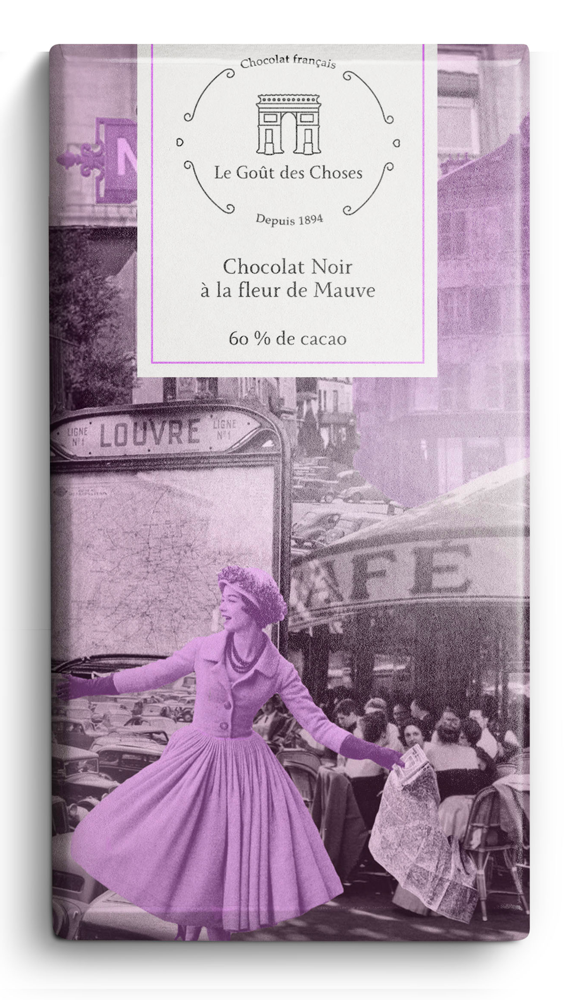
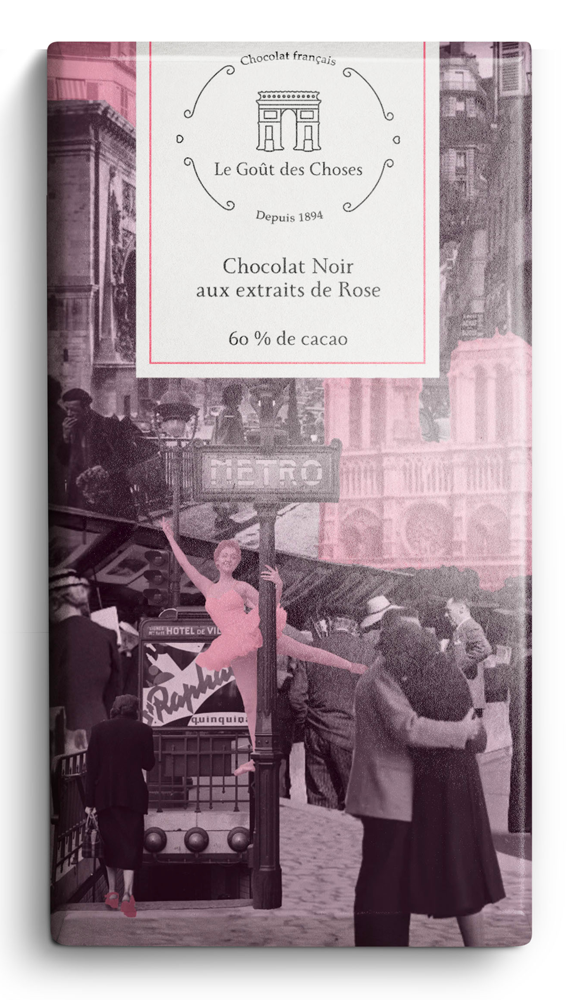
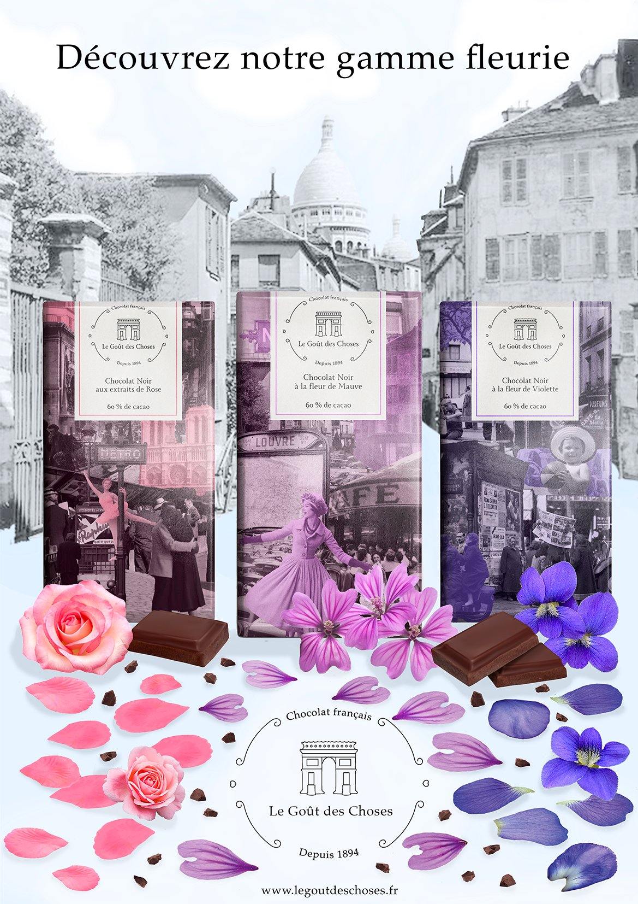
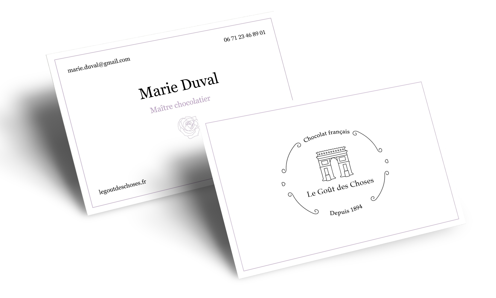
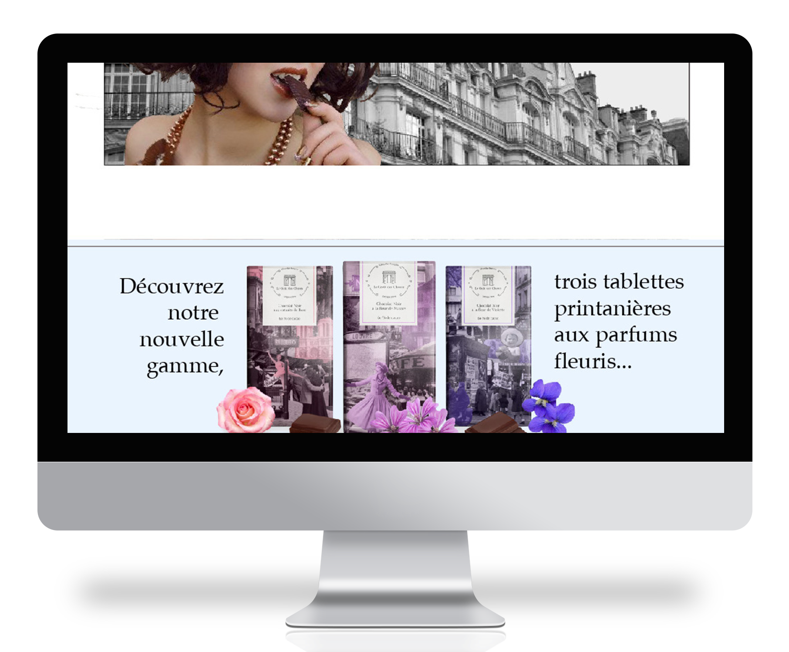
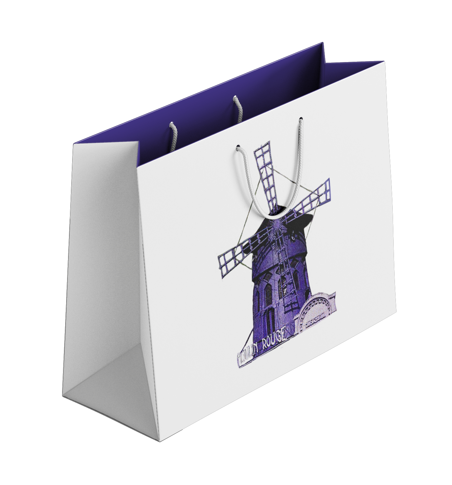
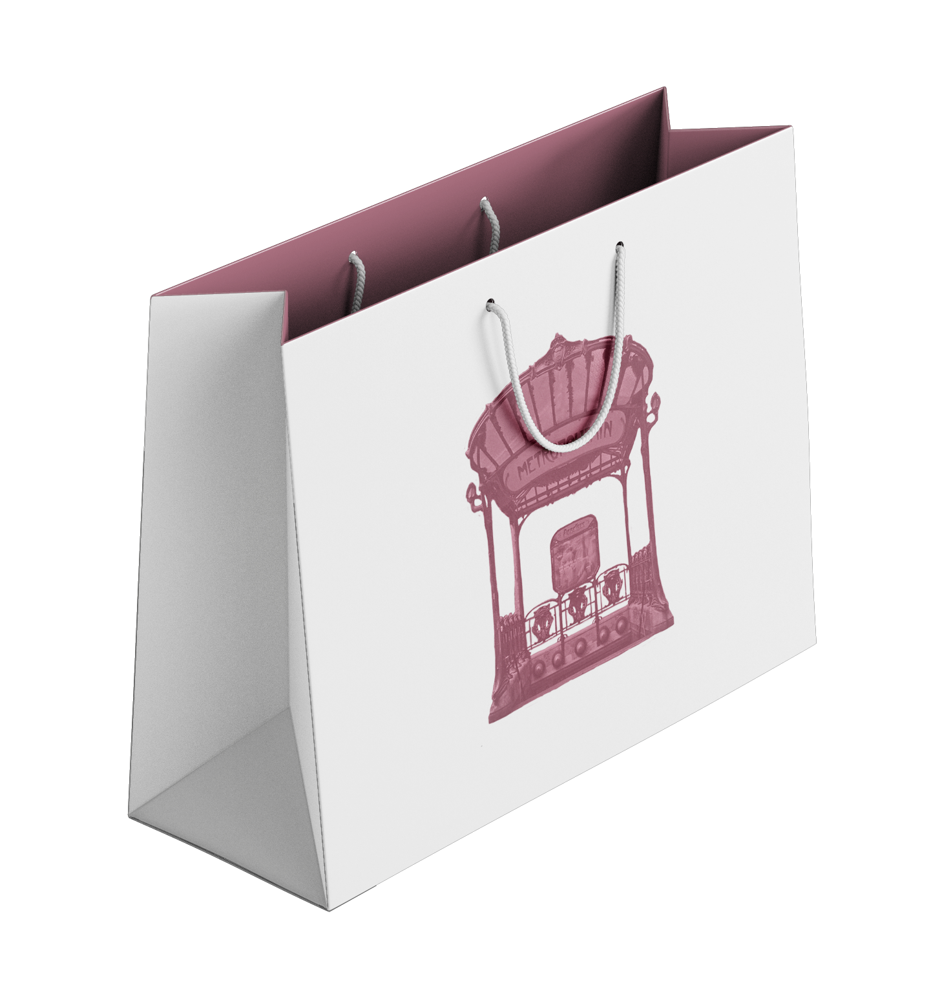
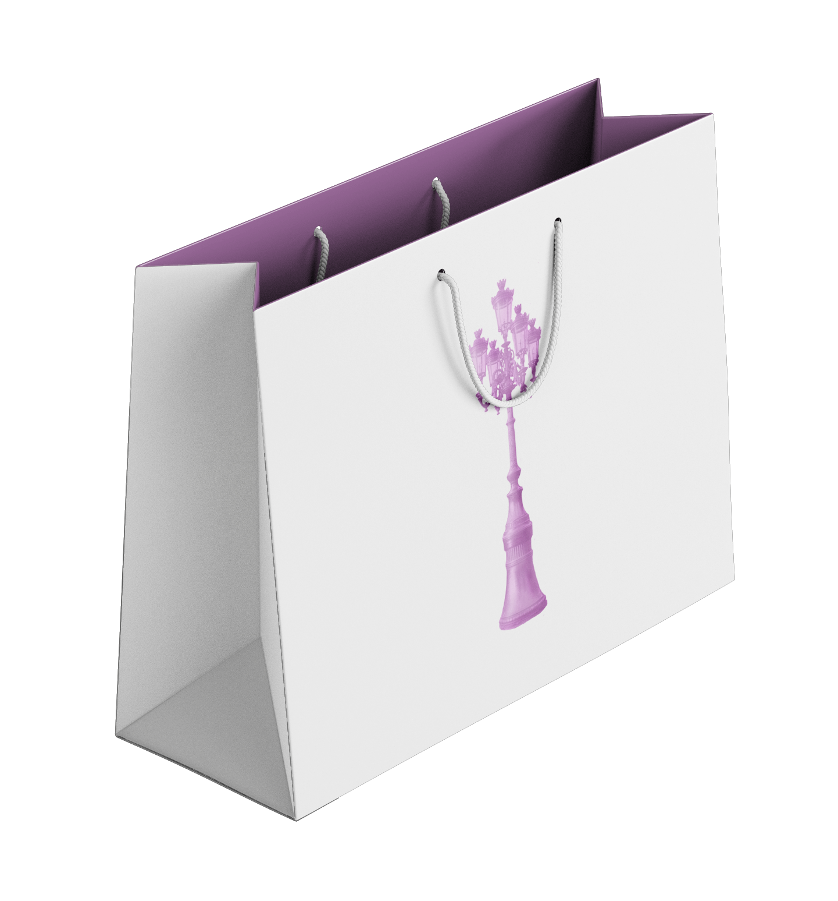

Le Goût
des choses
Le brief : imaginer l’identité visuelle et la collection d’une marque de chocolat haut de gamme. Je crée Le Goût des Choses, une marque française qui joue sur la nostalgie d’un vieux Paris rêvé, grâce à un collage d’anciennes photographies.
La collection est constituée de trois tablettes au goût de fleurs (rose, mauve, violette) permettant un jeu
de couleurs intéressant.








